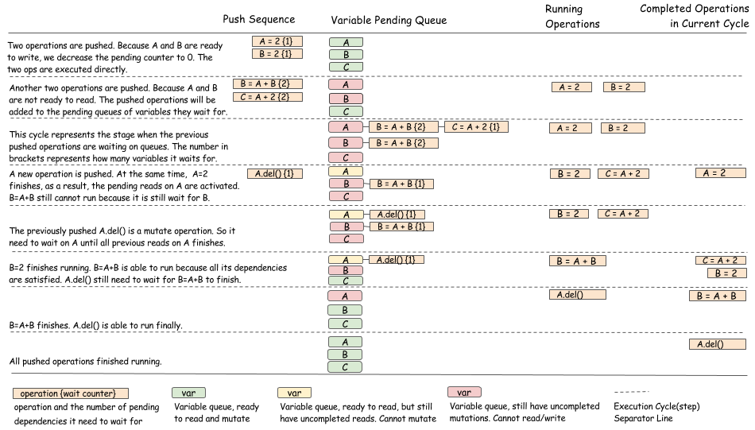

深度学习中的依赖引擎（翻译）
翻译自 https://mxnet.incubator.apache.org/architecture/note_engine.html
我们总是希望深度学习库能跑的更快并且能扩展到更大的数据集。一个很自然的方法是看看我们是否能用更多的硬件（用多个 GPU 并行处理）来解决这个问题。
深度学习库的设计者要面对这样一个问题：我们如何让计算在多个设备之间并行？并且更重要的是，当我们引入了多线程，该如何对计算进行同步？一个运行时的依赖引擎是个通用的解决方案。
这篇文章中，我们调查了使用运行时依赖调度来加速深度学习的各种方法。我们的目标是解释运行时依赖调度是如何加速并简化深度学习。我们还探索了对库和运算都无关的通用的依赖引擎可能的设计方案。
这篇文章中我们讨论的大部分内容都是来自于 MXNet 的依赖引擎。这个依赖跟踪算法主要是由 Yutian Li 和 Mingjie Wang 开发的。
依赖调度
尽管多数用户想要从并行计算中获益，然而多数的用户都对顺序编程更加熟悉。所以一个很自然的问题是：我们如何写顺序的程序，然后创建一个库来自动地使我们的程序并行化并且异步执行？
举个例子，在如下代码中，我们可以以任意顺序执行 B = A + 1 和 C = A + 2，或者并行执行它们：
A = 2
B = A + 1
C = A + 2
D = B * C
然而，要用手写出这个顺序不是那么容易，因为最后一个操作 D = B * C，需要等待前两个操作都完成才可以开始执行。下面的依赖图/数据流图展示了这点。

依赖引擎是一个库，它对一系列顺序的操作进行调度，根据一定的依赖关系，尽可能地将操作并行化。在这个例子中，调度引擎库可以并行执行 B = A + 1 和 C = A + 2，然后在它们都结束了之后再执行 D = B * C。
依赖调度中的一些问题
依赖引擎可以简化并发程序的开发。然而，操作的并行化带来了新的依赖跟踪问题。这一节中，我们讨论这些问题。
数据流依赖
数据流依赖描述了一个计算的输出如何可以被用在另一个计算中。每个依赖引擎都必须解决数据流依赖的问题。
因为我们在前一节中讨论过这个问题，我们在这里用了同一个图。使用了数据流跟踪引擎的库包括 Minerva 和 Purine2。
内存回收
我们什么时候应该回收分配给数组的内存？在顺序处理中，这个很容易确定。我们可以简单地在出了变量的作用域时回收它。然而，在并行处理时，事情就要复杂一些了，如下图所示：

在这个例子中，因为两个计算都需要使用 A 的值，我们不能在它们全都结束之前回收 A 的内存。引擎必须根据计算的依赖关系调度内存的回收操作，并且保证回收操作在 B = A + 1 和 C = A + 2 完成之后执行。
随机数生成
在机器学习中很常用的随机数生成器，给了依赖引擎一个有趣的挑战。考虑如下例子：

在这个例子中，我们按顺序生成随机数。尽管看起来两个随机数的生成可以并行化，然而实际情况并非如此。一个伪随机数生成器（PRNG）不是线程安全的，因为生成新随机数的时候可能会造成一些内部状态的变化。即使 PRNG 是线程安全的，我们也希望序列化的随机数生成，因为这样我们能得到可复现的随机数。
案例分析：多 GPU 神经网络的依赖引擎
在上一节中，我们讨论了在设计依赖引擎中可能遇到的问题。在思考如何设计一个通用的引擎来解决这些问题之前，让我们考虑依赖引擎如何能够在多个 GPU 时帮助神经网络的训练。以下伪代码展示了训练一个两层神经网络中的一个批次 (batch)。
# Example of one iteration Two GPU neural Net
data = next_batch()
data[gpu0].copyfrom(data[0:50])
data[gpu1].copyfrom(data[50:100])
# forward, backprop on GPU 0
fc1[gpu0] = FullcForward(data[gpu0], fc1_weight[gpu0])
fc2[gpu0] = FullcForward(fc1[gpu0], fc2_weight[gpu0])
fc2_ograd[gpu0] = LossGrad(fc2[gpu0], label[0:50])
fc1_ograd[gpu0], fc2_wgrad[gpu0] =
FullcBackward(fc2_ograd[gpu0] , fc2_weight[gpu0])
_, fc1_wgrad[gpu0] = FullcBackward(fc1_ograd[gpu0] , fc1_weight[gpu0])
# forward, backprop on GPU 1
fc1[gpu1] = FullcForward(data[gpu1], fc1_weight[gpu1])
fc2[gpu1] = FullcForward(fc1[gpu1], fc2_weight[gpu1])
fc2_ograd[gpu1] = LossGrad(fc2[gpu1], label[50:100])
fc1_ograd[gpu1], fc2_wgrad[gpu1] =
FullcBackward(fc2_ograd[gpu1] , fc2_weight[gpu1])
_, fc1_wgrad[gpu1] = FullcBackward(fc1_ograd[gpu1] , fc1_weight[gpu1])
# aggregate gradient and update
fc1_wgrad[cpu] = fc1_wgrad[gpu0] + fc1_wgrad[gpu1]
fc2_wgrad[cpu] = fc2_wgrad[gpu0] + fc2_wgrad[gpu1]
fc1_weight[cpu] -= lr * fc1_wgrad[cpu]
fc2_weight[cpu] -= lr * fc2_wgrad[cpu]
fc1_weight[cpu].copyto(fc1_weight[gpu0] , fc1_weight[gpu1])
fc2_weight[cpu].copyto(fc2_weight[gpu0] , fc2_weight[gpu1])
在这个程序中， data 0 到 50 复制到 GPU 0，data 50 到 100 复制到 GPU 1。计算出来的梯度在 CPU 中被合并起来之后做一个简单的 SGD 更新，再将更新了的权重复制回每个 GPU。这是个用顺序方式写并行程序的常用方法。以下依赖图展示了这个计算是如何并行化的：

说明：
- 在我们得到一层的梯度之后马上就可复制到 CPU
- 权重被更新之后马上就可以复制回 GPU
- 在前向计算中，我们需要依赖于前一个迭代的 fc1_weight[cpu]：fc1_weight[cpu].copyto(fc1_weight[gpu0], fc1_weight[gpu1])
- 对于第 k 层，在反向传播和下一次的正向计算之间有一个延迟，我们可以利用这个延迟来同步权重，来和其它计算并行。
这个方法被用在支持多 GPU 的深度学习库上，比如 CXXNet。要点是使计算和同步（通信）并发进行。然而，这并不是很简单，因为复制操作需要在一层的反向传播完成之后马上触发，之后复制操作又会触发更新操作。
依赖引擎能够在使用多线程和依赖跟踪来调度这些操作。
设计一个通用的依赖引擎
我们希望你相信依赖引擎对于在多个设备上扩展深度学习程序是有用的。现在让我们讨论一下该如何给依赖引擎设计和实现一个通用的接口。这个解决方案不是唯一的设计。只是我们认为在多数情况下它能很好地工作。
这里先给出一个依赖引擎的设计目标的概要：
- 引擎不应该依赖于知道要执行的操作是什么，这样用户可以定义任何操作。
- 引擎不应该限制它能够调度的对象
- 我们应该能够调度 GPU 和 CPU 内存的依赖。
- 例如我们应该能够跟踪随机数的依赖关系。
以下 Python 代码提供了一个可能帮我们达到目标的引擎接口。注意真实的实现可能是用 C++ 完成的。
class DepEngine(object):
def new_variable():
"""Return a new variable tag
Returns
-------
vtag : Variable Tag
The token of the engine to represent dependencies.
"""
pass
def push(exec_func, read_vars, mutate_vars):
"""Push the operation to the engine.
Parameters
----------
exec_func : callable
The real operation to be performed.
read_vars : list of Variable Tags
The list of variables this operation will read from.
mutate_vars : list of Variable Tags
The list of variables this operation will mutate.
"""
pass
因为我们不能对要调度的对象类型做任何假设，我们需要让用户来每个对象分配一个虚拟的标签，来标记我们需要调度什么。所以，最开始，用户可以分配标签，然后将它附在每个需要调度的对象上。

然后用户可以调用 push 来让引擎执行函数。用户还需要使用 read_vars 和 write_vars 来指定操作的依赖关系：
- read_vars 是用来指定只读变量的标签，计算过程中不会改变变量的状态。
- mutate_vars 是可变变量的标签，代表在计算过程中内部状态会发生变化。

上图示意了如何将操作 B = A + 1 推送到依赖引擎。B.data 和 A.data 是分配的空间。注意依赖引擎只关心变量的标签。任何的函数都可以被处理。对于我们想要调度的操作和资源来说，这个接口是通用的。
让我们看看引擎内部是如何根据标签来工作的，考虑以下代码：
B = A + 1
C = A + 2
A = C * 2
D = A + 3
第一行读取变量 A，更新变量 B。第二行读取变量 A，更新 C。等等。
引擎对每个变量维护一个队列，如以下动图所示。绿色代表读操作，红色代表写操作。

创建这些队列时，引擎看到在 A 的队列头的两个绿色方块可以并行操作，因为它们都是读操作，不会互相冲突。下图展示了这一点。
这个调度方法的很酷的一点就是它不仅限于调度数字运算。因为引擎中要调度的所有东西都用标签来表示，所以它可以调度任何东西。

译者注：上图最后两行似乎有点问题。最后两行的 mutate_vars 中应该有 B.var 和 C.var。
将现有代码移植到依赖引擎
因为通用接口不控制像内存分配和该执行哪个操作这些事情，多数现有代码可以按照以下两个步骤来用引擎进行调度：
- 为内存块或者 PRNGS 这些资源分配变量标签
- 像调用原先的代码那样把操作推送到调度引擎，并且将与各个资源相对应的标签正确地放入 read_vars 和 mutate_vars。
实现通用的依赖引擎
我们已经描述了通用的引擎接口，和它如何被用于调度不同的操作。在这一节中，我们从较高的层次讨论一下如何实现这样一个引擎。
一般的思路是只羊的：
- 对每一个变量标签，用一个队列来跟踪所有待执行的依赖。
- 对每一个操作，使用一个计数器来跟踪多少个依赖还没有完成。
- 当操作完成时，更新队列和依赖计数器，然后调度新的操作。
下图展示了这个调度算法，可能能让你更好地理解。

下面，我们展示了另一个和随机数生成相关的例子。

译者注：类似于拓扑排序，但是允许无相互依赖的操作并行。
可以看到，这个算法的目的是更新待执行操作队列，并且当操作完成时，做出正确的状态转移。注意在做状态转移时应当注意线程安全性。
运行策略的单独的依赖跟踪
如果你仔细阅读，就可能注意到前一节仅仅展示了算法如何决定操作何时被执行。我们没有展示如何实际去执行一个操作。在实践中，可能有许多不同的策略。比如，我们可以使用一个全局的线程池来运行所有操作，或者对每个设备有一个专门的线程来执行。
运行策略通常和依赖跟踪策略是相互独立的，能够被独立出来，作为一个单独的模块或是基本的依赖跟踪模块的一个虚拟接口。开发一个对所有操作和调度都公平的运行策略，本身就是一个很有趣的系统问题。
讨论
我们在这篇文章中讨论的设计并不是依赖跟踪问题的唯一解决方法。它只是个例子展示我们如何解决这个问题。可以确定，有些设计上的选择是需要讨论的，我们将在这一节讨论其中的一些。
动态和静态
某种意义上来讲，我们这里讨论的依赖引擎接口是动态的，因为用户能够一个一个地推送操作到引擎，而不是事先定义好整个依赖图（静态）。动态调度比静态声明的要有更多数据结构上的开销。然而，动态调度更灵活，比如支持自动对命令式程序或命令式符号式混合程序进行并行化。你也可以给接口增加一些预先定义的操作来重用数据结构。
可变和不可变
这篇文章中讲的通用依赖引擎接口支持对更新操作的显式的调度。在典型的数据流引擎中，数据通常是不可变的。不可变数据有很多好处。例如，不可变数据可以更容易并行化，并且可以在分布式环境中更好地容错（通过重新计算）。
然而，不可变数据有以下挑战：
- 对资源竞争问题更难调度，比如当处理随机数和删除资源时。
- 调度引擎需要管理资源（内存，随机数）来避免冲突。而且更难接入用户分配的控件，等等。
- 不能有预先分配的静态内存，因为通常的模式是写入一个预分配的层的空间，这在不可变数据的情况下不支持的。
允许可变数据可以减少这些问题。